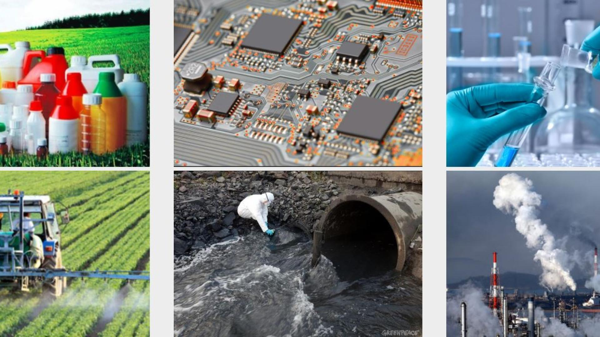
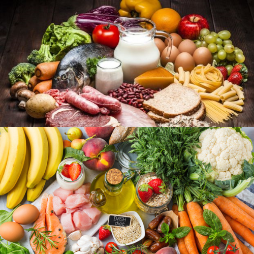
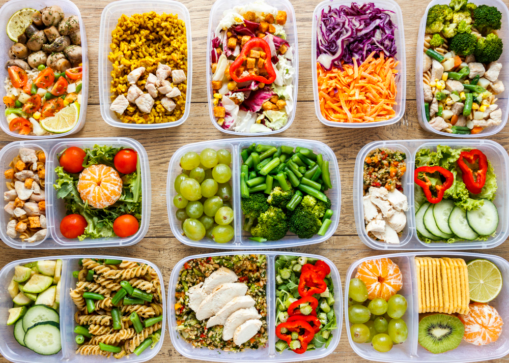
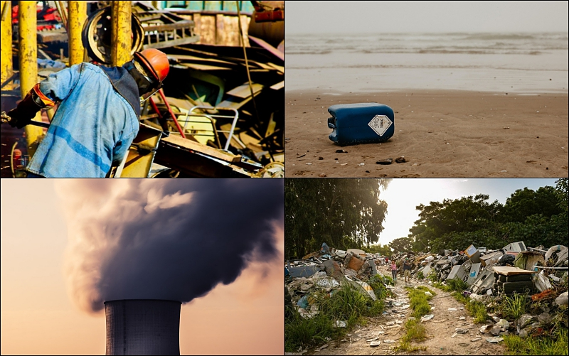

El objetivo de este sitio web es informar a las personas sobre los riesgos contra la salud que provocan algunos alimentos que ingerimos, además de mencionar algunas medidas para prevenir las diferentes enfermedades que se pueden producir, para así de esta forma crear conciencia del cuidado de nuestro cuerpo.
Problema de los contaminantes químicos en los alimentos y su impacto en la salud pública
Los contaminantes químicos son sustancias químicas, tanto naturales como sintéticas, que se introducen en el medio ambiente y pueden tener efectos perjudiciales en la salud de los seres vivos y en los ecosistemas. Estos contaminantes pueden ser sólidos, líquidos o gaseosos, y se liberan a la atmósfera, el agua o el suelo como resultado de actividades humanas, procesos industriales, agrícolas y naturales.
Algunos ejemplos comunes de contaminantes químicos incluyen:
Contaminantes del aire: como el dióxido de azufre (SO2), el óxido de nitrógeno (NOx), los compuestos orgánicos volátiles (COVs) y las partículas finas.
Contaminantes del agua: como metales pesados (por ejemplo, plomo, mercurio), productos químicos industriales, pesticidas y nutrientes en exceso (como nitrógeno y fósforo).
Contaminantes del suelo: incluyen sustancias como los hidrocarburos aromáticos policíclicos (HAP), solventes orgánicos y productos químicos agrícolas.
Contaminantes químicos en alimentos: como residuos de pesticidas, aditivos alimentarios y sustancias químicas tóxicas.
Contaminantes químicos en productos de consumo: incluyen productos químicos presentes en productos como plásticos, productos de cuidado personal y productos electrónicos.
Los contaminantes químicos pueden introducirse en los alimentos de diversas formas a lo largo de la cadena alimentaria. Estas fuentes de contaminación pueden ser naturales o relacionadas con actividades humanas.
Residuos de pesticidas: Los residuos de pesticidas pueden quedar en los alimentos si se aplican en exceso o si no se siguen adecuadamente las prácticas de seguridad en su uso.
Contaminación del suelo: Suelos contaminados con metales pesados u otros productos químicos pueden transferir estas sustancias a las plantas que crecen en ellos, que luego pueden ser consumidas como alimentos.
Contaminación del agua: Los contaminantes químicos en el agua pueden afectar a los peces y otros organismos acuáticos. Cuando se consumen estos organismos marinos o de agua dulce, los contaminantes pueden ingresar a la cadena alimentaria.
Contaminación ambiental: La contaminación del aire y del suelo por contaminantes químicos, como los compuestos orgánicos volátiles (COVs) y los metales pesados, puede depositar estos contaminantes en los cultivos y otros alimentos.
Contaminación cruzada: Durante el almacenamiento, manipulación y preparación de alimentos, pueden producirse contaminaciones cruzadas con productos químicos, como limpiadores, desinfectantes y detergentes, que pueden ingresar a los alimentos si no se toman las medidas adecuadas de higiene.
Efectos en la salud
La contaminación química en alimentos puede tener graves consecuencias para la salud humana. Estos son algunos de los problemas de salud y enfermedades asociados a la contaminación química en alimentos:
Intoxicación alimentaria: La contaminación de alimentos con microorganismos patógenos como Salmonella, Escherichia coli (E. coli), Listeria y Campylobacter puede causar intoxicación alimentaria. Los síntomas pueden incluir diarrea, vómitos, fiebre y deshidratación, y en casos graves, puede ser mortal.
Contaminación por productos químicos industriales: La exposición a estas sustancias puede aumentar el riesgo de cáncer y afectar el sistema endocrino y reproductivo.
Alergias alimentarias: La contaminación cruzada en la producción de alimentos, donde se mezclan ingredientes alérgenos con otros alimentos, puede llevar a la presencia inadvertida de alérgenos en productos alimenticios.
Contaminación por aditivos alimentarios: Algunos aditivos alimentarios, como los colorantes artificiales y los conservantes, han sido asociados con reacciones adversas en algunas personas, incluyendo hiperactividad en niños y sensibilidad en adultos.
Contaminación por micotoxinas: Las micotoxinas son sustancias producidas por hongos que pueden contaminar granos y otros alimentos. La ingestión de alimentos contaminados con micotoxinas puede provocar problemas de salud, como daño hepático y cáncer.
Los grupos de riesgo por contaminación química en alimentos son segmentos de la población que pueden ser más vulnerables a los efectos adversos de la exposición a sustancias químicas nocivas en los alimentos. Estos grupos de riesgo incluyen:
Niños: Los niños son especialmente vulnerables a los efectos de la contaminación química en alimentos debido a su menor peso corporal y su rápido desarrollo.
Ancianos: Las personas mayores a menudo tienen sistemas inmunológicos debilitados y una menor capacidad para desintoxicar su organismo, lo que los hace más susceptibles a los efectos adversos de los contaminantes químicos en los alimentos.
Mujeres embarazadas: Las mujeres embarazadas y sus fetos son particularmente sensibles a la exposición a sustancias químicas dañinas en los alimentos. La contaminación química puede afectar el desarrollo fetal y aumentar el riesgo de problemas de salud a largo plazo.
Personas con enfermedades crónicas: Aquellas personas que padecen enfermedades crónicas, como enfermedades cardíacas, diabetes, trastornos autoinmunitarios o cáncer, pueden ser más susceptibles ya que su sistema inmunológico o sus órganos pueden estar comprometidos.
Personas con trastornos del sistema inmunológico: Aquellos con sistemas inmunológicos debilitados, como personas con VIH/SIDA o que están tomando inmunosupresores.
Personas con enfermedades del hígado o los riñones: Los individuos con enfermedades hepáticas o renales pueden tener dificultades para procesar y eliminar sustancias químicas nocivas de su organismo.
Contaminantes comunes
El problema de los contaminantes químicos en los alimentos es una preocupación significativa para la salud pública. Los contaminantes comunes incluyen:

Pesticidas y herbicidas: Estos productos químicos se utilizan en la agricultura para proteger los cultivos de plagas y malezas. Su presencia en los alimentos puede tener efectos negativos en la salud a largo plazo.
Aditivos alimentarios: Algunos aditivos, como colorantes y conservantes, pueden tener efectos adversos para la salud si se consumen en cantidades excesivas o si una persona es sensible a ellos.
Metales pesados (plomo, mercurio, cadmio): La contaminación con metales pesados puede ocurrir a través de la contaminación ambiental o la acumulación en la cadena alimentaria. Estos metales pueden causar problemas graves de salud, especialmente en niños y mujeres embarazadas.
Compuestos orgánicos persistentes: Estos son productos químicos que no se descomponen fácilmente en el medio ambiente y pueden acumularse en los alimentos. Algunos de ellos, como los bifenilos policlorados (PCB), se han asociado con efectos adversos para la salud.
Normativas y regulaciones
Para abordar estos problemas, existen normativas y regulaciones específicas:
Leyes y regulaciones relacionadas con la seguridad alimentaria: Los gobiernos y agencias de salud de todo el mundo han establecido normativas para regular los niveles permitidos de contaminantes químicos en los alimentos. Estas leyes buscan proteger la salud pública al establecer límites seguros y asegurar la calidad de los alimentos.
Organizaciones encargadas de monitorear y regular los contaminantes: Diversas agencias gubernamentales y organizaciones internacionales, como la FDA (Administración de Alimentos y Medicamentos) en los Estados Unidos, la EFSA (Autoridad Europea de Seguridad Alimentaria) en Europa y la FAO (Organización de las Naciones Unidas para la Alimentación y la Agricultura), supervisan y regulan la seguridad de los alimentos, incluyendo la detección y gestión de contaminantes químicos.
Fuentes de contaminación
Contenido de la segunda pestaña.
Mitos y realidades
Contenido de la segunda pestaña.
Alimentos y alternativas saludables
 
La lista de los alimentos menos contaminados de químicos, según EWG (Environmental Working) en 2023, es la siguiente:
Aguacate
Kiwi
Maíz dulce
Repollo
Piña
Champiñones
Cebolla
Mangos
Papaya
Batatas
Guisantes dulces congelados
Sandias
Espárragos
Zanahorias
Melón dulce
Según las Dietary Guidelines for Americans 2020-2023, un plan saludable es:
Resalta la importancia de las frutas, las verduras, los cereales integrales, la leche y los productos lácteos sin grasa o bajos en grasa.
Incluye una variedad de alimentos con proteínas como mariscos, carnes magras, huevos, legumbres (frijoles y guisantes), productos de soya, nueces y semillas.
Contiene poca cantidad de grasas saturadas, grasas trans, colesterol, sal (sodio) y azúcares agregados.
Mantente dentro de sus necesidades calóricas diarias (1.600 y 2.500).
Impacto ambiental

Las consecuencias ambientales de los contaminantes químicos son:
La eutrofización.
La contaminación del suelo con metales pesados.
La contaminación de balsas de agua con disruptores endocrinos.
La acidificación generalizada.
Además la agricultura sostenible es el medio para conseguir la seguridad alimentaria a largo plazo, porque al producir alimentos bajo prácticas responsables con la tierra, el agua y los recursos naturales se garantiza la productividad de alimentos nutritivos y la rentabilidad a futuro.
Por otro lado, algunos métodos de reproducción responsables sin ir en detrimento del medio ambiente son:
Uso razonable de insumos y del agua.
Reducción del uso de fertilizantes químicos.
Gestionar eficazmente los abonos.
Frenar la degradación y asegurar la sostenibilidad del suelo, y rehabilitar los que han perdido su capacidad de producción.
Plantación de nuevos bosques e intensificación de los esfuerzos para evitar la deforestación.
Producir alimentos minimizando la generación de nuevas emisiones, ya que las prácticas que sustentan la agricultura sostenible son capaces de extraer el carbono de la atmósfera y depositarlos en el suelo donde se producen los alimentos.
Consejos y prevención
Reducir la exposición a los contaminantes químicos en los alimentos es fundamental para proteger la salud. Aquí tienes algunas medidas que puedes tomar para minimizar el riesgo de contaminación química en tu dieta:
Lavado adecuado de alimentos.
Almacenamiento seguro.
Evitar alimentos crudos o poco cocidos.
Compra alimentos de origen confiable.
Variedad en la dieta.
Evitar alimentos procesados en exceso.
Evitar el uso excesivo de envases de plástico.
Consumo responsable de alcohol y cafeína.
Recuros y fuentes confiables
A continuación, te proporciono enlaces a algunas organizaciones de salud y seguridad alimentaria de renombre a nivel internacional y nacional:
Estas organizaciones ofrecen información actualizada sobre seguridad alimentaria, pautas de consumo saludable y noticias relacionadas con la calidad de los alimentos. Es importante consultar fuentes confiables para estar al tanto de las últimas recomendaciones y regulaciones en materia de seguridad alimentaria.